TRƯỜNG KỸ THUẬT VÀ CÔNG NGHỆ
KHOA CÔNG NGHỆ THÔNG TIN
THỰC TẬP ĐỒ ÁN CHUYÊN NGÀNH
HỌC KỲ I, NĂM HỌC 2025-2026
XÂY DỰNG WEBSITE QUẢN LÝ THƯ VIỆN
Giảng viên hướng dẫn: ThS. Nguyễn Hoàng Duy Thiện | Sinh viên thực hiện: Họ tên: Phạm Minh Nhật MSSV: 110122130 Lớp : DA22TTB |
Vĩnh Long, tháng 12 năm 2025
NHẬN XÉT CỦA GIẢNG VIÊN HƯỚNG DẪN
Vĩnh Long, ngày 29 tháng 12 năm 2025
Giảng viên hướng dẫn
(Ký tên và ghi rõ họ tên)
Nguyễn Hoàng Duy Thiện
NHẬN XÉT CỦA THÀNH VIÊN HỘI ĐỒNG
Vĩnh Long, ngày 29 tháng 12 năm 2025
Thành viên hội đồng
(Ký tên và ghi rõ họ tên)
LỜI CẢM ƠN
Báo cáo đồ án cơ sở ngành với chủ đề "Xây dựng Website quản lý thư viện" là kết quả của sự nỗ lực không ngừng và sự giúp đỡ, động viên của thầy cô, bạn bè. Thông qua báo cáo này, xin gửi lời cảm ơn đến những người đã giúp đỡ trong quá trình nghiên cứu và hoàn thành đồ án. Xin bày tỏ sự kính trọng và biết ơn sâu sắc tới thầy Nguyễn Hoàng Duy Thiện vì đã trực tiếp hướng dẫn và cung cấp những thông tin cần thiết cho đồ án này. Xin chân thành cảm ơn lãnh đạo Trường Đại học Trà Vinh, Trường Kỹ thuật và Công nghệ, Khoa Công nghệ thông tin đã tạo điều kiện hoàn thành thành công đồ án. Trong quá trình thực hiện đồ án, do kiến thức còn hạn chế nên còn nhiều thiếu sót mong các thầy cô có thể bổ sung thêm để đồ án hoàn thiện hơn.
Xin chân thành cảm ơn!
Sinh viên thực hiện (Ký tên và ghi rõ họ tên) Phạm Minh Nhật |
CHƯƠNG 1: TỔNG QUAN 10
1.1. Giới thiệu 10
1.2 Lý do chọn đề tài 10
1.3 Mục tiêu 11
1.4 Phạm vi đề tài 12
1.5 Công nghệ và công cụ sử dụng 12
CHƯƠNG 2: NGHIÊN CỨU LÝ THUYẾT 13
2.1 Cơ sở lý thuyết về PHP 13
2.1.1 Giới thiệu về PHP 13
2.1.2 Ứng dụng của PHP trong lập trình 13
2.2 Cơ sở lý thuyết về MongoDB 13
2.2.1 Giới thiệu về MongoDB 13
2.2.2 Các thành phần chính trong MongoDB 14
2.3 Những điểm khác biệt giữa SQL và NoSQL 14
2.3.1 Giới thiệu SQL 14
2.3.2 Giới thiệu NoSQL 14
2.3.3 So sánh SQL và NoSQL 15
CHƯƠNG 3: HIỆN THỰC HÓA NGHIÊN CỨU 18
3.1 Mô tả bài toán 18
3.2 Các yêu cầu chức năng của hệ thống 19
3.2.1 Người dùng 19
3.2.2 Thủ thư 20
3.2.3 Quản trị viên (Admin) 21
3.3 Các yêu cầu phi chức năng của hệ thống 22
3.3.1 Hiệu năng 22
3.3.2 Bảo mật 22
3.4 Thiết kế các sơ đồ cho hệ thống 23
3.4.1 Mô hình thực thể kết hợp 23
3.4.2 Mô hình cơ sở dữ liệu mức luận lý 23
3.4.3 Mô hình cơ sở dữ liệu mức vật lý 24
3.4.4 Sơ đồ Usecase 24
3.4.5 Mô hình phân cấp chức năng 26
3.5 Thiết kế cơ sở dữ liệu 27
3.5.1 Kiến trúc tổng thể 27
3.5.2 Cấu trúc cơ sở dữ liệu 27
3.4.3 Thiết kế API 28
3.6 Mô tả cơ sở dữ liệu 34
3.7 Công nghệ sử dụng và triển khai 39
3.7.1 Công nghệ sử dụng 39
3.7.2 Cấu hình Docker và quy trình triển khai 41
CHƯƠNG 4: KẾT QUẢ THỰC NGHIỆM 46
4.1 Thiết kế giao diện 46
4.1.1 Giao diện quản trị viên 46
4.1.2 Giao diện người dùng 52
4.1.3 Giao diện Thủ thư 57
4.2 Phần kết quả 63
4.3 Phần hiệu năng 63
4.4 Phần trải nghiệm 63
CHƯƠNG 5: KẾT LUẬN VÀ HƯỚNG PHÁT TRIỂN 65
5.1 Ưu điểm 65
5.2 Nhược điểm 65
5.3 Hướng phát triển 66
DANH MỤC TÀI LIỆU THAM KHẢO 67
PHỤ LỤC 68
Hình 3.1 Mô hình thực thể kết hợp 23
Hình 3.2 Mô hình cơ sở dữ liệu mức luận lý 23
Hình 3.3 Mô hình cơ sở dữ liệu mức vật lý 24
Hình 3.4 Sơ đồ Use case tổng quát của hệ thống 24
Hình 3.5 Sơ đồ Use case độc giả 25
Hình 3.6 Sơ đồ Use case thủ thư 25
Hình 3.7 Sơ đồ Use case quản trị viên 26
Hình 3.8 Sơ đồ mô hình phân cấp chức năng 26
Hình 3.9 Sơ đồ kiến trúc hệ thống 27
Hình 3.10 Cấu trúc Database của hệ thống 27
Hình 3.11 Lược đồ cơ sở dữ liệu của website 34
Hình 4.1 Giao diện Đăng nhập 46
Hình 4.2 Giao diện Trang chủ - quản trị 46
Hình 4.3 Giao diện trang Tìm kiếm - quản trị 47
Hình 4.4 Giao diện trang Thể loại sách - quản trị 48
Hình 4.5 Giao diện Quản lí Sách - quản trị 48
Hình 4.6 Giao diện trang Hồ sơ danh sách người dùng - quản trị 49
Hình 4.7 Giao diện trang Thống kê - quản trị 49
Hình 4.8 Giao diện trang Cài đặt - quản trị 50
Hình 4.9 Giao diện trang Hỗ trợ - quản trị 50
Hình 4.10 Giao diện trang Thông báo - quản trị 51
Hình 4.11 Giao diện Đăng ký 52
Hình 4.12 Giao diện Đăng nhập 53
Hình 4.13 Giao diện Trang chủ - người dùng 53
Hình 4.14 Giao diện trang Tìm kiếm - người dùng 54
Hình 4.15 Giao diện trang Thể loại sách - người dùng 54
Hình 4.16 Giao diện Mượn - Trả sách - người dùng 55
Hình 4.17 Giao diện trang Hỗ trợ - người dùng 55
Hình 4.18 Giao diện trang Chi tiết Hỗ trợ - người dùng 56
Hình 4.19 Giao diện trang Cài đặt - người dùng 56
Hình 4.20 Giao diện trang Thông báo - người dùng 57
Hình 4.21 Giao diện Đăng nhập - thủ thư 57
Hình 4.22 Giao diện Trang chủ - thủ thư 58
Hình 4.23 Giao diện trang Tìm kiếm - thủ thư 59
Hình 4.24 Giao diện trang Thể loại sách - thủ thư 59
Hình 4.25 Giao diện trang Hồ sơ danh sách người dùng - thủ thư 60
Hình 4.26 Giao diện Quản lí Sách - thủ thư 60
Hình 4.27 Giao diện trang Thống kê - thủ thư 61
Hình 4.28 Giao diện trang Cài đặt - thủ thư 61
Hình 4.29 Giao diện trang Hỗ trợ - thủ thư 62
Hình 4.30 Giao diện trang Thông báo - thủ thư 62
DANH MỤC BẢNG BIỂU
Bảng 2.1 So sánh SQL và NoSQL 15
Bảng 3.1 Chi tiết thực thể DANHMUC 34
Bảng 3.2 Chi tiết thực thể MUONTRA 34
Bảng 3.3 Chi tiết thực thể NGUOIDUNG 35
Bảng 3.4 Chi tiết thực thể PHIEUMUONSACH 36
Bảng 3.5 Chi tiết thực thể SACH 36
Bảng 3.6 Chi tiết thực thể SUPPORT 37
Bảng 3.7 Chi tiết thực thể TACGIA 38
TÓM TẮT ĐỒ ÁN CHUYÊN NGÀNH
Đồ án chuyên ngành với đề tài “Xây dựng Website quản lý thư viện” được thực hiện nhằm giải quyết các thách thức trong việc quản trị dữ liệu sách và quy trình mượn trả tại các thư viện truyền thống. Mục tiêu chính của dự án là xây dựng một nền tảng trực tuyến hiện đại, giúp tự động hóa các thao tác thủ công, nâng cao hiệu quả quản lý cho thủ thư và mang lại sự tiện lợi trong tra cứu cho độc giả. Hệ thống được phát triển theo mô hình Client-Server tách biệt. Frontend sử dụng các công nghệ nền tảng là HTML, CSS và JavaScript để xây dựng giao diện trực quan, dễ thao tác. Backend được xây dựng trên ngôn ngữ lập trình PHP, đóng vai trò xử lý logic nghiệp vụ và cung cấp các RESTful API. Hệ thống sử dụng cơ sở dữ liệu NoSQL MongoDB để lưu trữ thông tin, giúp tối ưu hóa việc quản lý dữ liệu và tăng khả năng mở rộng. Điểm đặc biệt của đồ án là việc áp dụng công nghệ container hóa Docker và quản lý thông qua Docker Compose, giúp chuẩn hóa môi trường triển khai và đảm bảo tính nhất quán của hệ thống. Kết quả đạt được là một website hoàn chỉnh với hai phân quyền chính: Quản trị viên và Đọc giả. Hệ thống cho phép quản trị viên quản lý danh mục sách, tác giả, thể loại và theo dõi phiếu mượn trả một cách chặt chẽ. Độc giả có thể dễ dàng tra cứu thông tin sách và xem lịch sử cá nhân trực tuyến. Đồ án không chỉ dừng lại ở việc hoàn thiện các chức năng nghiệp vụ mà còn đảm bảo tính ổn định, tốc độ phản hồi nhanh và giao diện thân thiện. Đây là nền tảng quan trọng để phát triển thêm các tính năng thông minh như gợi ý sách bằng AI hay tích hợp thanh toán phí phạt trong tương lai.
Trong bối cảnh chuyển đổi số đang diễn ra mạnh mẽ, việc hiện đại hóa các hoạt động quản trị không còn là lựa chọn mà đã trở thành yêu cầu bắt buộc đối với mọi tổ chức giáo dục và văn hóa. Thư viện, với vai trò là trung tâm lưu trữ và phổ biến tri thức, đang đứng trước thách thức lớn trong việc đáp ứng nhu cầu tra cứu nhanh chóng và quản lý khoa học của kỷ nguyên mới. Phương thức quản lý truyền thống thông qua sổ sách hay các phần mềm offline đơn giản dần bộc lộ nhiều hạn chế như: quy trình mượn trả tốn thời gian, khó khăn trong việc kiểm kê tài liệu và thiếu tính tương tác trực tiếp với độc giả.
Đồ án “Xây dựng Website quản lý thư viện” được hình thành với mục tiêu thiết lập một nền tảng quản trị trực tuyến toàn diện, giúp chuẩn hóa và tự động hóa các quy trình nghiệp vụ cốt lõi. Hệ thống không chỉ đơn thuần là công cụ lưu trữ dữ liệu mà còn là cầu nối giữa nhà quản lý và người dùng. Đối với quản trị viên, website cung cấp khả năng kiểm soát chặt chẽ danh mục đầu sách, theo dõi sát sao tình trạng mượn trả và hỗ trợ ra quyết định thông qua các báo cáo thống kê chính xác. Đối với độc giả, hệ thống mang đến một không gian tra cứu hiện đại, cho phép tìm kiếm thông tin và đăng ký mượn sách mọi lúc, mọi nơi chỉ với các thiết bị có kết nối Internet.
Đồ án hướng tới việc tối ưu hóa hiệu suất thông qua các giải pháp triển khai tiên tiến, đảm bảo hệ thống luôn hoạt động ổn định, an toàn và dễ dàng mở rộng trong tương lai. Việc áp dụng các quy chuẩn thiết kế hiện đại cũng giúp giao diện trở nên thân thiện, trực quan, phù hợp với nhiều đối tượng người dùng khác nhau.
Tóm lại, đồ án này không chỉ giải quyết các bài toán kỹ thuật đơn thuần mà còn hướng tới mục tiêu xây dựng một môi trường đọc sách văn minh, tiện lợi, góp phần thúc đẩy văn hóa đọc và nâng cao hiệu quả công tác quản lý giáo dục trong nhà trường
Trong thời đại công nghệ số phát triển mạnh mẽ, việc ứng dụng công nghệ thông tin vào quản lý dữ liệu và quy trình làm việc tại các cơ quan, đơn vị hành chính, trường học là xu hướng tất yếu nhằm nâng cao hiệu suất, tiết kiệm thời gian và nguồn lực. Một trong những lĩnh vực vẫn còn tồn tại nhiều bất cập trong quy trình quản lý truyền thống chính là hệ thống thư viện. Hầu hết các thư viện hiện nay, đặc biệt tại các trường học hoặc cơ sở giáo dục quy mô nhỏ, vẫn đang vận hành dựa trên phương pháp thủ công như ghi chép tay, sử dụng Excel đơn lẻ hoặc chưa có hệ thống quản lý dữ liệu tập trung. Điều này dẫn đến nhiều khó khăn trong việc kiểm kê sách, tra cứu thông tin, thống kê số liệu, quản lý người mượn, theo dõi tình trạng mượn/trả sách, v.v. Nhận thấy được nhu cầu thực tiễn và tính ứng dụng cao của một hệ thống quản lý thư viện số, nhóm quyết định lựa chọn đề tài “Xây dựng Website quản lý thư viện” nhằm mang đến giải pháp thay thế hiệu quả cho phương pháp quản lý truyền thống.
Đồng thời, đề tài cũng cho phép nhóm áp dụng toàn bộ các công nghệ hiện đại theo yêu cầu của đồ án, bao gồm: Xây dựng Frontend bằng HTML, CSS, Javascript và Backend bằng PHP trên MongoDB, giao tiếp qua API RESTful, tích hợp quy trình CI/CD qua GitHub Actions và triển khai môi trường bằng Docker. Việc này tạo điều kiện thuận lợi để nhóm tương tác thực với quy trình phát triển phần mềm Fullstack, từ đó củng cố kinh nghiệm thực tế về lập trình backend và frontend như trong môi trường doanh nghiệp thực tế.
Mục tiêu của đề tài “Xây dựng Website quản lý thư viện” là thiết kế và phát triển một hệ thống website hoàn chỉnh, hỗ trợ các chức năng quản lý sách, quản lý người dùng, tra cứu sách, theo dõi tình trạng mượn và trả sách một cách trực tuyến, tiện lợi và chính xác. Ứng dụng phải được xây dựng dựa trên kiến trúc hiện đại, tách biệt frontend và backend theo mô hình client/server rõ ràng, đảm bảo khả năng mở rộng, bảo trì lâu dài và dễ tích hợp về sau. Giao diện người dùng được thiết kế với mục tiêu mang lại trải nghiệm trực quan, thân thiện và dễ sử dụng cho cả người quản trị lẫn người dùng cuối. Phần frontend sử dụng bằng HTML, CSS, Javascript để phát triển. Backend được xây dựng bằng PHP và phục vụ giao tiếp với frontend và tương tác cơ sở dữ liệu trên MongoDB. Hệ thống còn được tích hợp CI/CD qua GitHub Actions giúp tự động hoá quá trình triển khai và kiểm thử mã nguồn. Bên cạnh đó, Docker được sử dụng để đóng gói ứng dụng, đảm bảo tính nhất quán trong môi trường chạy thực tế. Thông qua việc thực hiện đề tài, không chỉ hoàn thành sản phẩm có giá trị ứng dụng thực tế, mà còn rèn luyện được kỹ năng lập trình fullstack, sử dụng công cụ chuyên nghiệp, cũng như tư duy giải quyết vấn đề trong quá trình triển khai một dự án phần mềm thực tế của bản thân.
Website chỉ tập trung vào xây dựng với các chức năng cơ bản của một hệ thống website quản lý thư viện.
Chức năng mô phỏng quy trình mượn và trả sách.
Hệ thống triển khai trên Docker, chưa đưa lên server thực tế.
Giao diện hướng đến tính đơn giản, dễ hiểu.
Ngôn ngữ lập trình:
PHP: Dùng để xử lý logic backend, kết nối cơ sở dữ liệu.
HTML, CSS, JavaScript: Xây dựng giao diện người dùng đơn giản, dễ sử dụng.
Cơ sở dữ liệu:
MongoDB: Lưu trữ thông tin sản phẩm, tài khoản người dùng, đơn hàng,...
Container hóa:
Docker: Đóng gói ứng dụng thành các container để dễ triển khai.
Docker Compose: Quản lý và khởi động đồng thời nhiều container (web + database).
IDE & công cụ hỗ trợ:
Visual Studio Code: Soạn thảo và quản lý mã nguồn.
Docker Desktop: Quản lý container trong môi trường Windows.
PHP Server : Chạy ứng dụng PHP.
MongoDB Compass: kết nối với cơ sở dữ liệu của MongoDB.
PHP là viết tắt của từ Hypertext Preprocessor. Đây là một ngôn ngữ lập trình kịch bản (scripting language) mã nguồn mở và là tập hợp con của các ngôn ngữ script như JavaScript và Python. Ngôn ngữ này chủ yếu được dùng để phát triển các ứng dụng từ phía server, bên cạnh đó còn được sử dụng cho frontend và backend. PHP rất thích hợp với web và có thể nhúng vào trong trang HTML bằng cách sử dụng cặp thẻ <?php ?>. Các tệp lệnh PHP chỉ có thể được diễn giải trên một máy chủ đã cài PHP [1].
Các ứng dụng phổ biến của PHP trong lĩnh vực công nghệ thông tin bao gồm:
Xây dựng và cấu hình hệ thống máy chủ: một trong những ứng dụng chính của PHP. Các lập trình viên PHP thường thực hiện nhiệm vụ như phân tích mã nguồn PHP, triển khai máy chủ web và trình duyệt web.
Phát triển các dòng lệnh: tạo ra các tập lệnh để thực thi mã PHP mà không cần máy chủ. Phương pháp này thường được sử dụng trên nền tảng hệ điều hành phổ biến như Linux hoặc Windows.
Xây dựng ứng dụng: phát triển các ứng dụng phần mềm bằng cách tận dụng các tính năng mạnh mẽ sẵn có.
Hỗ trợ cho các loại cơ sở dữ liệu khác nhau: Một website tích hợp cơ sở dữ liệu tốt sẽ giúp quản lý dữ liệu, sao lưu và đặc biệt là tạo bản sao lưu dữ liệu để đối phó với các vấn đề an ninh mạng có thể xảy ra [1].
MongoDB là một hệ quản trị cơ sở dữ liệu NoSQL hướng tài liệu mã nguồn mở, được sử dụng để lưu trữ dữ liệu có dung lượng lớn. MongoDB được phát triển bởi MongoDB Inc và phát hành lần đầu tiên vào năm 2009. Thay vì sử dụng các bảng và cột như trong cơ sở dữ liệu truyền thống, MongoDB sử dụng bộ sưu tập (collections) và tài liệu (documents). Documents bao gồm các cặp Khóa- giá trị (key-value) là đơn vị dữ liệu cơ bản trong MongoDB. Collections chứa các bộ tài liệu (documents) và hàm tương đương với các table của cơ sở dữ liệu truyền thống [2].
Các thành phần chính trong mongoDB bao gồm:
_id: đây là trường bắt buộc. Trường _id đại diện cho một giá trị độc nhất trong document MongoDB. Trường _id giống như khóa chính của document. Nếu bạn tạo một document mới mà không có trường _id, MongoDB sẽ tự động tạo trường.
Collection: một nhóm các document. Collection tương đương với một bảng như Oracle hoặc MSSQL. Một collection tồn tại trong một cơ sở dữ liệu duy nhất.
Cursor: một con trỏ đến tập kết quả. Client có thể lặp lại qua cursor để truy xuất kết quả.
Database: vùng chứa cho các collection, trong đó nó là vùng chứa cho các bảng. Mỗi cơ sở dữ liệu có một bộ tệp riêng trên hệ thống tệp. Một máy chủ MongoDB có thể lưu trữ nhiều cơ sở dữ liệu.
Document: bản ghi trong collection MongoDB. Document sẽ bao gồm tên trường và giá trị.
Field: một cặp tên trường và giá trị trong document. Một document có thể không hoặc có nhiều field. Các field tương tự như các hàng trong cơ sở dữ liệu quan hệ.
JSON: được gọi là JavaScript Object Notation. Đây là định dạng văn bản thuần túy, có thể đọc được bởi con người để thể hiện dữ liệu có cấu trúc .JSON hiện được hỗ trợ trong nhiều ngôn ngữ lập trình [2].
SQL chính là viết tắt của Structured Query language, là ngôn ngữ chuẩn để xử lý Cơ sở dữ liệu quan hệ. Một cơ sở dữ liệu quan hệ xác định các mối quan hệ dưới dạng các bảng [3].
Lập trình SQL có thể được sử dụng hiệu quả để chèn, tìm kiếm, cập nhật, xóa các bản ghi cơ sở dữ liệu.
Điều đó không có nghĩa là SQL không thể làm được gì ngoài việc đó. Nó có thể làm rất nhiều thứ bao gồm, nhưng không giới hạn, tối ưu hóa và duy trì cơ sở dữ liệu [3].
Các cơ sở dữ liệu quan hệ như Cơ sở dữ liệu MySQL, Oracle, MS SQL Server, Sybase sử dụng SQL.
NoSQL là một DMS không quan hệ, không yêu cầu một lược đồ cố định, tránh các phép nối, và dễ dàng mở rộng. Cơ sở dữ liệu NoSQL được sử dụng cho các kho dữ liệu phân tán với nhu cầu lưu trữ dữ liệu khổng lồ. NoSQL được sử dụng cho dữ liệu lớn và các website thời gian thực. Ví dụ như các công ty như Twitter, Facebook, Google thu thập hàng terabyte dữ liệu người dùng mỗi ngày [3].
Cơ sở dữ liệu NoSQL là viết tắt của "Không chỉ SQL" hoặc "Không phải SQL" được Carl Strozz giới thiệu khái niệm NoSQL vào năm 1998.
RDBMS truyền thống sử dụng cú pháp SQL để lưu trữ và truy xuất dữ liệu để có thêm thông tin chi tiết. Thay vào đó, một hệ thống cơ sở dữ liệu NoSQL bao gồm một loạt các công nghệ cơ sở dữ liệu có thể lưu trữ dữ liệu có cấu trúc, bán cấu trúc, không có cấu trúc và đa hình [3].
SQL | NoSQL | |
|---|---|---|
Định nghĩa | Cơ sở dữ liệu SQL chủ yếu được gọi là RDBMS hoặc Cơ sở dữ liệu quan hệ | Cơ sở dữ liệu NoSQL chủ yếu được gọi là cơ sở dữ liệu không liên quan hoặc phân tán |
Design for | RDBMS truyền thống sử dụng cú pháp và truy vấn SQL để phân tích và lấy dữ liệu để có thêm thông tin chi tiết. Chúng được sử dụng cho các hệ thống OLAP. | Hệ thống cơ sở dữ liệu NoSQL bao gồm nhiều loại công nghệ cơ sở dữ liệu khác nhau. Các cơ sở dữ liệu này được phát triển để đáp ứng nhu cầu trình bày cho sự phát triển của ứng dụng hiện đại. |
Ngôn ngữ Query | Structured query language (SQL) | Không có ngôn ngữ query |
Type | SQL databases là cơ sở dữ liệu dựa trên bảng | NoSQL databases có thể dựa trên tài liệu, cặp khóa-giá trị, cơ sở dữ liệu biểu đồ |
Schema | SQL databases có lược đồ được xác định trước | NoSQL databases sử dụng lược đồ động cho dữ liệu phi cấu trúc. |
Khả năng mở rộng | SQL databases có thể mở rộng theo chiều dọc | NoSQL databases có thể mở rộng theo chiều ngang |
Ví dụ | Oracle, Postgres, and MS-SQL. | MongoDB, Redis, , Neo4j, Cassandra, Hbase. |
Phù hợp cho | Đây là 1 lựa chọn lý tưởng cho môi trường truy vấn phức tạp | Không phù hợp với truy vấn phức tạp |
Lưu trữ dữ liệu phân cấp | SQL databases không thích hợp cho việc lưu trữ dữ liệu phân cấp. | Phù hợp hơn cho kho lưu trữ dữ liệu phân cấp vì nó hỗ trợ phương thức cặp khóa-giá trị. |
Variations | Một loại có biến thể nhỏ | Nhiều loại khác nhau bao gồm các kho khóa-giá trị, cơ sở dữ liệu tài liệu và cơ sở dữ liệu đồ thị. |
Năm phát triển | Nó được phát triển vào những năm 1970 để giải quyết các vấn đề với lưu trữ tệp phẳng | Được phát triển vào cuối những năm 2000 để khắc phục các vấn đề và hạn chế của SQL databases. |
Open-source | Một sự kết hợp của mã nguồn mở như Postgres & MySQL, và thương mại như Oracle Database. | Open-source |
Tính nhất quán | Nó phải được cấu hình cho sự nhất quán chặt chẽ. | Nó phụ thuộc vào DBMS như một số cung cấp tính nhất quán mạnh mẽ như MongoDB, trong khi những người khác cung cấp chỉ cung cấp sự nhất quán cuối cùng, như Cassandra. |
Được sử dụng tốt nhất cho | RDBMS database là tùy chọn thích hợp để giải quyết các vấn đề về ACID. | NoSQL được sử dụng tốt nhất để giải quyết các vấn đề về tính khả dụng của dữ liệu |
Tầm quan trọng | Nó nên được sử dụng khi hiệu lực dữ liệu là siêu quan trọng | Sử dụng khi nó quan trọng hơn để có dữ liệu nhanh hơn dữ liệu chính xác |
Lựa chọn tốt nhất | Khi người dùng cần hỗ trợ truy vấn động | Sử dụng khi người dùng cần mở rộng quy mô dựa trên yêu cầu thay đổi |
Hardware | Specialized DB hardware (Oracle Exadata, etc.) | Commodity hardware |
Network | Highly available network (Infiniband, Fabric Path, etc.) | Commodity network (Ethernet, etc.) |
Loại lưu trữ | Highly Available Storage (SAN, RAID, etc.) | Commodity drives storage (standard HDDs, JBOD) |
Tính năng tốt nhất | Hỗ trợ đa nền tảng, Bảo mật và miễn phí | Dễ sử dụng, hiệu suất cao và công cụ linh hoạt. |
Mô hình ACID và BASE | ACID (Atomicity, nhất quán, cách ly và độ bền) là một chuẩn cho RDBMS | Cơ bản (Về cơ bản có sẵn, trạng thái mềm, phù hợp cuối cùng) là một mô hình của nhiều hệ thống NoSQL |
Performance | SQL hoạt động tốt và nhanh thì việc desgin tốt là cực kì quan trọng và ngược lại. | Nhanh hơn SQL NoSQL thì denormalized cho phép người dùng lấy được tất cả thông tin về một item cụ thể với các codition mà không cần JOIN liên quan hoặc truy vấn SQL phức tạp. |
Kết luận | Dự án đã có yêu cầu dữ liệu rõ ràng xác định quan hệ logic có thể được xác định trước. | Phù hợp với những dự án yêu cầu dữ liệu không liên quan, khó xác định, đơn giản mềm dẻo khi đang phát triển |
Xác định yêu cầu và cấu trúc website:
Bài toán đặt ra là xây dựng một nền tảng trực tuyến, cho phép người dùng:
Mượn - trả sách, bao gồm tìm kiếm theo thể loại, tên sách, tên tác giả, lựa chọn sách mượn. Bên cạnh đó, hệ thống cần cung cấp công cụ quản trị để kiểm duyệt và quản lý dữ liệu.
Nghiên cứu HTML,CSS và Javascript, PHP và MongoDB:
Tìm hiểu các chức năng của trang web, nghiên cứu ngôn ngữ PHP, MongoDB, các bài giảng, tài liệu để hiểu rõ hơn và cách liên kết với nhau.
Thiết kế giao diện và kiến trúc lại hệ thống:
- Thiết kế giao diện bao gồm lên ý tưởng phác thảo lại giao diện với các trang như:
Trang chủ: hiển thị các quyển sách nổi bật và có lượt mượn nhiều nhất tháng lên đầu trang.
Trang tìm kiếm: tìm kiếm sách theo tên sách hoặc tên tác giả, đồng thời lựa chọn sách để mượn tại đây.
Trang thể loại: tìm kiếm sách theo thể loại, cũng có thể lựa chọn sách để mượn.
Trang hỗ trợ: người dùng có thể yêu cầu hỗ trợ bằng cách gửi phiếu yêu cầu chứa chi tiết lỗi hoặc những bất cập mà người dùng gặp phải cho Admin xử lí.
Trang cài đặt: người dùng có thể yêu cầu hỗ trợ bằng cách gửi phiếu yêu cầu chứa chi tiết lỗi hoặc những bất cập mà người dùng gặp phải cho Admin xử lí.
Database: tận dụng lại các bảng có sẳn và thay đổi các thuộc tính trong bảng.
Thực hiện nghiên cứu và phát triển và cấu hình MongoDB và Docker.
- Cài đặt các phần mềm cần thiết và cấu hình yêu cầu: Visual Studio Code, MongoDB Compass, Docker Desktop, PHP 8+ và các phần mở rộng hỗ trợ khác.
- Triển khai chức năng chính:
Chức năng tìm kiếm sách: tạo trang tìm kiếm sách theo tên, tên tác giả hoặc theo thể loại Chức năng
Chức năng mượn sách: trong trang tìm kiếm sách theo tên, tên tác giả hoặc theo thể loại, chọn sách trong đó và chọn Mượn sách.
Chức năng gửi yêu cầu hỗ trợ: nhập tiêu đề, nội dung yêu cầu hỗ trợ, và đính kèm hình ảnh nếu có gửi yêu cầu lên server, gửi thông báo đến tài khoản quản trị viên để yêu cầu khắc phục.
Chức năng quản trị: giao diện quản trị cho phép admin quản lý sách, quản lý thông tin, tài khoản người dùng và xem thống kê.
Người dùng nhập các thông tin như: tên đăng nhập, mật khẩu, xác nhận mật khẩu, họ tên, email, địa chỉ. Hệ thống kiểm tra hợp lệ dữ liệu hay không. Nếu đăng ký thành công sẽ thông báo cho người dùng và chuyển hướng sang trang đăng nhập. Nếu thất bại sẽ hiển thị thông báo lỗi cụ thể.
Người dùng nhập tên đăng nhập và mật khẩu trên trang đăng nhập. Nếu đúng thì chuyển đến giao diện người dùng, nếu sai thì hiển thị thông báo lỗi.
Nhập tùy chọn (tìm theo tên sách, tên tác giả) và nhập nội dung để tìm kiếm, khi đó hệ thống sẽ hiển thị danh sách sách phù hợp.
Người dùng có thể nhấn vào hình ảnh hoặc tên sách để xem chi tiết các thông tin như tên sách, mã sách, mã giá sách, tác giả, năm xuất bản, mã kệ sách.
Chọn thể loại muốn tìm.Hệ thống sẽ hiển thị danh sách sách tương ứng thể loại đã chọn. Người dùng cũng có thể nhấn vào để xem chi tiết tương tự chức năng Tìm sách theo tên sách và tên tác giả
Người dùng chọn sách muốn mượn và mượn sách, hệ thống sẽ kiểm tra xem số lượng sách còn không, nếu còn thì thông báo mượn sách thành công và có thể theo dõi thông tin các sách đã mượn.
Người dùng truy cập trang hỗ trợ, nhập tiêu đề, nội dung yêu cầu hỗ trợ.
Hệ thống sẽ lưu lại yêu cầu và phản hồi cho người dùng biết đã gửi thành công hay thất bại, nếu thành công sẽ gửi thông báo đến tài khoản của quản trị viên yêu cầu khắc phục.
Người dùng xem và cập nhật thông tin cá nhân trong trang Cài đặt: họ tên, tên đăng nhập, email, địa chỉ. Còn có thể chọn đổi mật khẩu, nếu thành công, thông báo cho người dùng, nếu thất bại, hiển thị lỗi.
Người dùng nhấn nút đăng xuất, chuyển về trang đăng nhập, đảm bảo bảo mật thông tin cá nhân.
Thủ thư nhập tên đăng nhập, mật khẩu trên trang đăng nhập. Hệ thống xác thực thông tin, kiểm tra quyền (loại user = 3). Nếu đúng, chuyển đến giao diện quản trị và hiển thị các chức năng quản lý.
Thủ thư có thể tìm kiếm sách tương tự như chức năng tìm sách của người dùng.
Thủ thư cũng có thể tìm kiếm sách tương tự như chức năng tìm sách theo thể loại của người dùng.
Thêm mới sách, sửa thông tin sách, xóa sách và quản lý trạng thái sách như: cập nhật trạng thái (có sẵn, đang mượn, hết sách).
Thủ thư truy cập trang quản lý người dùng, xem danh sách tất cả người dùng (trừ mật khẩu). Cập nhật lại thông tin người dùng khi cần thiết.
Xem số lượng tổng quan: tổng số người dùng, tổng số sách, tổng số lượt mượn, tổng số danh mục sách kèm theo dữ liệu được hiển thị dạng bảng hoặc biểu đồ trực quan.
Thủ thư nhấn nút đăng xuất, chuyển về trang đăng nhập, đảm bảo bảo mật thông tin cá nhân.
Quản trị viên nhập tên đăng nhập, mật khẩu trên trang đăng nhập. Hệ thống xác thực thông tin, kiểm tra quyền (loại user = 1). Nếu đúng, chuyển đến giao diện quản trị và hiển thị các chức năng quản lý.
Quản trị viêncó thể tìm kiếm sách tương tự như chức năng tìm sách của người dùng và thủ thư.
Quản trị viên cũng có thể tìm kiếm sách tương tự như chức năng tìm sách theo thể loại của người dùng và thủ thư.
Quản trị viên có quyền xem danh sách tất cả người dùng. Cập nhật thông tin người dùng:email, địa chỉ hoặc xóa người dùng khi cần thiết.
Quản trị viên xem số lượng tổng quan do thủ thư gửi tới: tổng số người dùng, tổng số sách, tổng số lượt mượn, tổng số danh mục sách. Dữ liệu sẽ được hiển thị dạng bảng hoặc biểu đồ trực quan.
Thêm mới sách, sửa thông tin sách, xóa sách và quản lý trạng thái sách.
Quản trị viên có quyền xem danh sách các yêu cầu hỗ trợ do người dùng gửi lên, từ đó có thể nắm được vấn đề người dùng gặp phải để xử lý và phản hồi lại người dùng đó khi cần thiết.
Quản trị viên nhấn nút đăng xuất, chuyển về trang đăng nhập, đảm bảo bảo mật thông tin cá nhân.
Hệ thống phải đảm bảo thời gian phản hồi cho các thao tác cơ bản (đăng nhập, đăng ký, tìm kiếm sách, xem thông tin sách, gửi yêu cầu hỗ trợ) không vượt quá 4-5 giây trong điều kiện tải bình thường.
Khi có nhiều người dùng truy cập đồng thời, hệ thống vẫn phải duy trì tốc độ phản hồi ổn định, hạn chế bị treo hoặc chậm đáng kể.
Ứng dụng frontend phải tải nhanh, tối ưu hóa tài nguyên tĩnh (ảnh, JS, CSS).
Phân quyền rõ ràng: chỉ quản trị viên mới truy cập được các chức năng quản lý, thống kê, xóa/sửa người dùng, sách; người dùng thường không thể truy cập các API này.
Các API phải kiểm tra xác thực và phân quyền trước khi xử lý yêu cầu.
Dữ liệu cá nhân (email, địa chỉ, lịch sử mượn sách) phải được bảo vệ, không tiết lộ cho bên thứ ba.
Ghi log các thao tác quan trọng (đăng nhập, xóa dữ liệu, thay đổi thông tin) để phục vụ kiểm tra bảo mật.
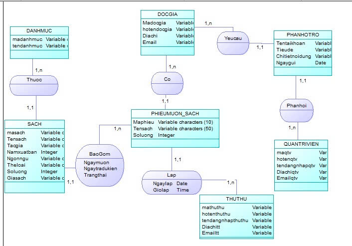
Hình 3.1 Mô hình thực thể kết hợp
3.4.2 Mô hình cơ sở dữ liệu mức luận lý
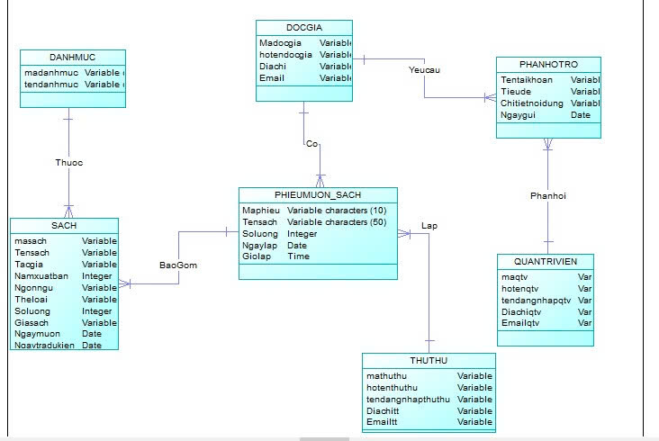
Hình 3.2 Mô hình cơ sở dữ liệu mức luận lý
3.4.3 Mô hình cơ sở dữ liệu mức vật lý
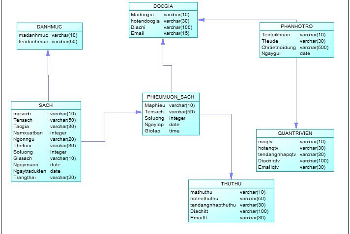
Hình 3.3 Mô hình cơ sở dữ liệu mức vật lý
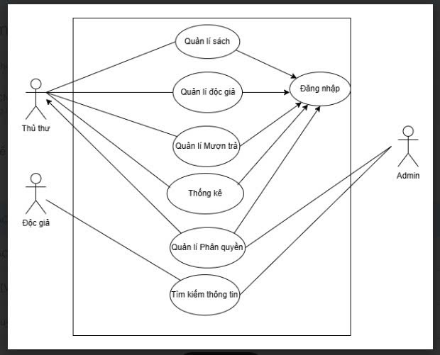
Hình 3.4 Sơ đồ Use case tổng quát của hệ thống
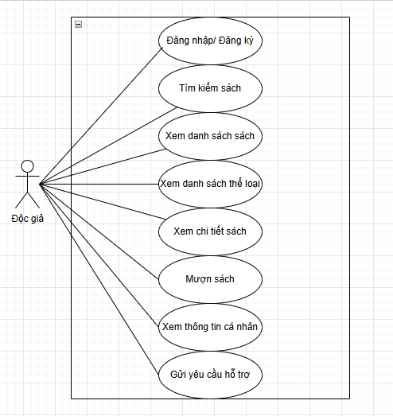
Hình 3.5 Sơ đồ Use case độc giả
Hình 3.6 Sơ đồ Use case thủ thư
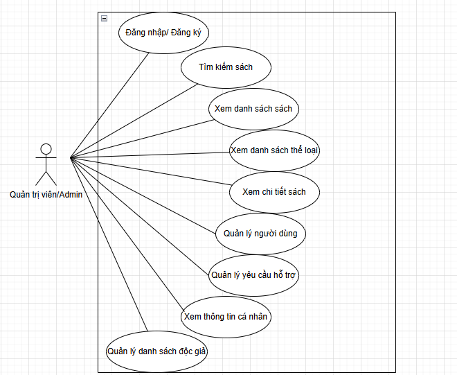
Hình 3.7 Sơ đồ Use case quản trị viên
3.4.5 Mô hình phân cấp chức năng
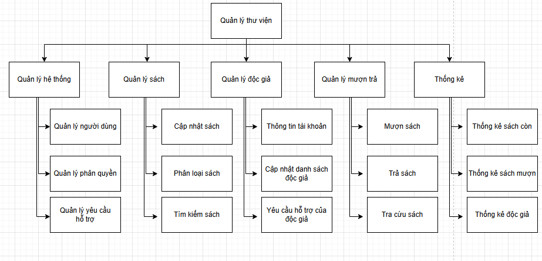
Hình 3.8 Sơ đồ mô hình phân cấp chức năng
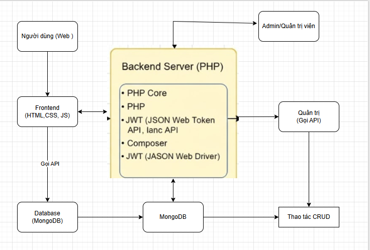Hình 3.9 Sơ đồ kiến trúc hệ thống
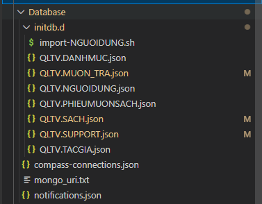
Hình 3.10 Cấu trúc Database của hệ thống
Mô tả: xác thực người dùng
Chức năng: xử lý đăng nhập, đăng ký và đăng xuất
Hỗ trợ:
- login: kiểm tra tài khoản/mật khẩu, tạo session
- register: tạo tài khoản mới với mã hóa mật khẩu
- logout: hủy session
Tên API | Input | Output | Quy trình xử lí |
POST: { ""identifier"": ""username or email"", ""password"": ""password"" } | JSON: { ""success"": true/false, ""message"": ""message"", ""token"": ""JWT token"", ""user"": { ""id"": ""user_id"", ""username"": ""username"", ""email"": ""email"", ""role"": ""1/2/3"" } | "Bước 1: User điền form đăng nhập với identifier (username/email) và password Bước 2: API Gateway nhận request, forward đến Auth Service endpoint /api/auth Bước 3: Auth Service xử lý: Tìm user trong DB (MySQL/MongoDB), verify password bằng password_verify(), tạo session Bước 4: Response trả về Frontend với token và thông tin user" |
Mô tả: Quản lý Sách
Chức năng: Gọi controller SachController để quản lý danh sách sách
Xử lý: Đọc từ QLTV.SACH.json hoặc MySQL
Tên API | Input | Output | Quy trình xử lí |
JSON: { ""success"": true, ""data"": [ { ""ID"": ""S001"", ""ten_sach"": ""Book Name"", ""tac_gia"": ""Author"", ""nam_xuat_ban"": 2024, ""so_luong"": 10, ""trang_thai"": ""Có sẵn"", ""image"": ""/images/book.jpg"" } | Bước 1: Frontend request danh sách sách Bước 2: SachController đọc từ QLTV.SACH.json hoặc MySQL Bước 3: Trả về array chứa thông tin tất cả sách" |
Mô tả: Tìm kiếm Sách
Chức năng: Tìm kiếm sách theo từ khóa (có hỗ trợ tiếng Việt không dấu), tìm theo: Tên sách, tác giả, thể loại, ngôn ngữ.
Tên API | Input | Output | Quy trình xử lí |
GET: ?q=keyword" | JSON: { ""success"": true, ""data"": [ { ""ID"": ""S001"", ""ten_sach"": ""Matched Book"", ""tac_gia"": ""Author"", ""relevance"": 95 } ], ""total"": 5 } | Bước 1: User nhập từ khóa tìm kiếm Bước 2: Frontend gửi GET request với query parameter q Bước 3: Backend chuẩn hóa chuỗi (bỏ dấu tiếng Việt), tìm kiếm trong ten_sach, tac_gia, danh_muc Bước 4: Trả về danh sách sách khớp với từ khóa |
Mô tả: quản lý Mượn/Trả - Mượn sách
Chức năng: tạo phiếu mượn sách mới
Kiểm tra: số lượng sách còn trong kho
Cập nhật: giảm số lượng sách, tạo record trong MUON_TRA
Tên API | Input | Output | Quy trình xử lí |
JSON: { ""id_sach"": ""S001"", ""id_nguoi_dung"": ""U001"" } | JSON: { ""success"": true/false, ""message"": ""Mượn sách thành công"", ""muon_tra_id"": ""MT001"" } | Bước 1: User chọn sách muốn mượn Bước 2: Frontend gửi id_sach và user_id từ session Bước 3: Backend kiểm tra so_luong > 0 trong QLTV.SACH.json Bước 4: Tạo record mới trong QLTV.MUON_TRA.json với ID tự động, ngày mượn = hôm nay, trang_thai = Đang mượn Bước 5: Giảm so_luong sách xuống 1 Bước 6: Response xác nhận |
Mô tả: quản lý Mượn/Trả - Trả sách (người dùng)
Chức năng: đánh dấu sách đã trả
Cập nhật: tăng số lượng sách, cập nhật trạng thái
Tên API | Input | Output | Quy trình xử lí | |
JSON: { ""id_sach"": ""S001"" } | JSON: { ""success"": true/false, ""message"": ""Trả sách thành công"" } | Bước 1: User chọn sách muốn trả Bước 2: Frontend gửi id_sach Bước 3: Backend tìm record trong MUON_TRA với id_sach và trang_thai != Đã trả Bước 4: Update trang_thai = Đã trả, ngay_tra = hôm nay Bước 5: Tăng so_luong sách lên 1 trong SACH.json Bước 6: Response xác nhận" | ||
Mô tả: lấy danh sách người dùng
Chức năng: lọc - Có thể lọc theo loại người dùng
Tên API | Input | Output | Quy trình xử lí |
GET: ?loai=1/2/3 | JSON: { ""success"": true, ""data"": [ { ""ID"": ""U001"", ""ten"": ""User Name"", ""email"": ""email"", ""loai"": ""1"", ""dia_chi"": ""address"", ""so_dien_thoai"": ""phone"" } ] } | Bước 1: Admin request danh sách người dùng Bước 2: Backend đọc từ QLTV.NGUOIDUNG.json Bước 3: Filter theo loai nếu có (1=Admin, 2=Thủ thư, 3=User) Bước 4: Trả về array người dùng |
Dữ liệu của hệ thống được áp dụng bằng MongoDB, lưu trữ và vận hành thông qua MongoDB Compass.
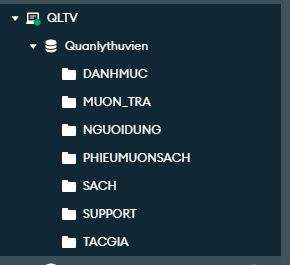
Hình 3.11 Lược đồ cơ sở dữ liệu của website
Chi tiết các thực thể:
Bảng 3.1 Chi tiết thực thể DANHMUC
STT | Thuộc tính | Diễn giải | Kiểu dữ liệu |
1 | _id | Khóa chính của thực thể | ObjectId |
2 | ID_danh_muc | Id của danh mục | String |
3 | ten_danh_muc | Tên danh mục | String |
4 | mo_ta | Mô tả sơ lược danh mục | String |
5 | ngay_tao | Ngày tạo danh mục | Date |
Bảng 3.2 Chi tiết thực thể MUONTRA
STT | Thuộc tính | Diễn giải | Kiểu dữ liệu |
|---|---|---|---|
1 | _id | Khóa chính của thực thể | |
2 | ID_muon_tra | Id mượn trả | String |
3 | ID_phieu | Id của phiếu | String |
4 | ID_nguoi_dung | Id của người dùng mượn | String |
5 | ID_sach | Id sách được mượn | String |
6 | ten_sach | Id tên sách được mượn | String |
7 | ngay_muon | Ngày mượn | Date |
8 | ngay_tra_du_kien | Ngày trả dự kiến | Date |
9 | ngay_tra | Ngày trả thực tế | Date |
10 | trang_thai | Trạng thái phiên mượn(Đang mượn, đã trả, Quá hạn) | String |
Bảng 3.3 Chi tiết thực thể NGUOIDUNG
STT | Thuộc tính | Diễn giải | Kiểu dữ liệu |
1 | _id | Khóa chính | |
2 | username | Tên đăng nhập tài khoản | String |
3 | password | Mật khẩu tài khoản | String |
4 | ho_ten | Họ tên của người dùng | String |
5 | dia_chi | Địa chỉ người dùng | String |
6 | Email người dùng | String | |
7 | Loai | Phân loại tài khoản (1=admin, 2= độc giả, 3= thủ thư) | String |
Bảng 3.4 Chi tiết thực thể PHIEUMUONSACH
STT | Thuộc tính | Diễn giải | Kiểu dữ liệu |
1 | _id | Khóa chính | String |
2 | ID_nguoi_dung | Id của tài khoản | String |
3 | Ngay_muon | Ngày mượn | String |
4 | Ngay_tra_du_kien | Ngày trả dự kiến | String |
5 | trang_thai | Trạng thái phiên mượn(Đang mượn, đã trả, Quá hạn) | String |
Bảng 3.5 Chi tiết thực thể SACH
STT | Thuộc tính | Diễn giải | Kiểu dữ liệu |
|---|---|---|---|
1 | _id | Khóa chính | |
2 | ten_sach | Tên sách | String |
3 | Tac_gia | Tên tác giả | String |
4 | Nam_xuat_ban | Năm xuất bản sách | String |
5 | Ngon_ngu | Ngôn ngữ của sách | String |
6 | Trang_thai | Trạng thái (Có sẵn, không có sẵn) | String |
7 | Vi_tri | Vị trí của sách | String |
8 | Ngay_them | Ngày thêm sách vào hệ thống | Date |
9 | Anh_bia | Chứa liên kết ảnh của sách trên hệ thống | String |
10 | Danh_muc | Danh mục của sách | String |
11 | ID_danh_muc | Id danh mục | String |
12 | So_luong | Số lượng sách còn lại | Int |
Bảng 3.6 Chi tiết thực thể SUPPORT
STT | Thuộc tính | Diễn giải | Kiểu dữ liệu |
1 | _id | Khóa chính | |
2 | User_id | id của người dùng | String |
3 | Username | Tên đăng nhập | String |
4 | title | Tiêu đề ngắn gọn về lỗi mà người dùng đề cập | String |
5 | details | Chi tiết về lỗi đó | String |
6 | Screen_shot | Ảnh đính kèm lỗi đó(nếu có) | String |
7 | Create_at | Ngày tạo | Date |
8 | reply | Phản hồi của quản trị viên | String |
Bảng 3.7 Chi tiết thực thể TACGIA
STT | Thuộc tính | Diễn giải | Kiểu dữ liệu |
|---|---|---|---|
1 | _id | Khóa chính | |
2 | Ten_tac_gia | tên tác giả | String |
3 | Quoc_tich | Quốc tịch của tác giả | String |
4 | Ngay_sinh | Ngày sinh của tác giả | Date |
5 | Tieu _su | Tiểu sử ngắn gọn của tác giả | String |
- HTML/CSS/Javascript:
HTML: xây dựng cấu trúc giao diện người dùng trên frontend.
CSS: được tổ chức thành các file riêng biệt (style.css) và sử dụng trong các file .html .
Javascript: ngôn ngữ chính cho frontend, Sử dụng fetch API để giao tiếp với backend qua REST API.
- PHP:
Ngôn ngữ chính để xây dựng toàn bộ backend
Hỗ trợ kết nối đa Database (MongoDB, MySQL, JSON files)
- HTML :
Xây dựng cấu trúc giao diện (Trang chủ người dùng, thủ thư, quản trị viên) .
Tạo các bảng hiển thị danh sách sách, danh sách người dùng, lịch sử mượn trả, hiển thị thông tin chi tiết từng quyển sách, ảnh bìa, tên sách, tác giả, số lượng còn lại.
Xây dựng thực hiện các thao tác như đăng nhập, đăng xuất, mượn trả sách, tìm kiếm và chuyển trang.
- CSS : thiết kế màu sắc, font chữ, kích thước, tạo hiệu ứng hoạt ảnh cho giao diện thêm sinh động, đẹp mắt.
- Javascript :
Sử dụng fetch API gửi HTTP yêu càu đến backend và nhận Json reponses. Xử lí các thao tác như đăng nhập, đăng ký, lấy danh sách sách, mượn trả sách, tìm kiếm thông qua các API endpoints.
Thêm, xóa, sửa các phần tử HTML, cập nhật số lượng sách còn lại theo thời gian thực.
Đọc ảnh và hiện preview trước khi upload lên server.
- PHP: Xây dựng toàn bộ backend, xử lý mọi logic nghiệp vụ, xác thực người dùng, thao tác với Database và cung cấp RESTful API cho frontend.
- MongoDB PHP Library: thư viện chính thức của MongoDB để tương tác với MongoDB database từ PHP code.
Đây là hệ thống 3 tầng database theo thứ tự ưu tiên lần lượt là: MongoDB, MySQL/MariaDB và JSON files. Hệ thống được sử dụng để đảm bảo ứng dụng không bao giờ bị sập vì vấn đề mất kết nối với cơ sở dữ liệu và chạy được trên nhiều môi trường khác nhau.
- MongoDB(Tier 1): database chính được ưu tiên sử dụng trong production tạo môi trường vận hành trang web.
**Thông tin kết nối**: - Database name: qltv_demo - Connection URI: mongodb://localhost:27017 - Configuration: Đọc từ file Database/mongo_uri.txt hoặc environment variable QLTV_MONGO_URI - Default port: 27017 |
- MySQL/MariaDB(Tier 2): database dự phòng thứ nhất, được sử dụng khi MongoDB không có sẵn.
**Thông tin kết nối**: - Database name: qltv_demo - Host: 127.0.0.1 (localhost) - Port: 3306 - User: root (configurable qua environment variable QLTV_DB_USER) - Password: empty string (configurable qua QLTV_DB_PASS) - Charset: utf8mb4 để hỗ trợ Unicode đầy đủ |
- JSON files(Tier 3): phương án dự phòng cuối cùng, đảm bảo ứng dụng vẫn chạy được kể cả khi không có MongoDB hay MySQL
**Cấu trúc Files**: Location: Database/initdb.d/ **7 JSON Files tương ứng 7 collections/tables**: - QLTV.NGUOIDUNG.json: 110 lines, 20+ users - QLTV.SACH.json: 572 lines, 150+ books - QLTV.MUON_TRA.json: Borrow/return history - QLTV.PHIEUMUONSACH.json: Borrow receipts - QLTV.DANHMUC.json: Book categories - QLTV.TACGIA.json: Authors information - QLTV.SUPPORT.json: Support tickets |
Dự án sử dụng Docker và Docker Compose để container hóa toàn bộ hệ thống gồm:
Frontend (HTML,CSS,Javascript).
Backend (PHP,MongoDB).
# Backend Dockerfile FROM php:8.2-apache # Install dependencies RUN apt-get update && apt-get install -y \ libssl-dev \ libcurl4-openssl-dev \ pkg-config \ && rm -rf /var/lib/apt/lists/* # Install MongoDB PHP driver RUN pecl install mongodb && \ docker-php-ext-enable mongodb # Install Composer COPY --from=composer:latest /usr/bin/composer /usr/bin/composer WORKDIR /var/www/html # Copy backend files COPY . /var/www/html/backend/ COPY composer.json /var/www/html/ # Install dependencies RUN composer install --no-dev --optimize-autoloader # Configure Apache for backend API RUN a2enmod rewrite headers && \ echo '<VirtualHost *:80>\n\ DocumentRoot /var/www/html/backend\n\ <Directory /var/www/html/backend>\n\ Options Indexes FollowSymLinks\n\ AllowOverride All\n\ Require all granted\n\ </Directory>\n\ ErrorLog ${APACHE_LOG_DIR}/error.log\n\ CustomLog ${APACHE_LOG_DIR}/access.log combined\n\ </VirtualHost>' > /etc/apache2/sites-available/000-default.conf # Set permissions RUN chown -R www-data:www-data /var/www/html && \ chmod -R 755 /var/www/html EXPOSE 80 CMD ["apache2-foreground"] |
# Frontend Dockerfile FROM php:8.2-apache # Install dependencies RUN apt-get update && apt-get install -y \ libssl-dev \ libcurl4-openssl-dev \ pkg-config \ && rm -rf /var/lib/apt/lists/* # Install MongoDB PHP driver RUN pecl install mongodb && \ docker-php-ext-enable mongodb WORKDIR /var/www/html # Copy frontend files COPY . /var/www/html/ # Configure Apache for frontend RUN a2enmod rewrite headers && \ echo '<VirtualHost *:80>\n\ DocumentRoot /var/www/html\n\ <Directory /var/www/html>\n\ Options Indexes FollowSymLinks\n\ AllowOverride All\n\ Require all granted\n\ </Directory>\n\ <FilesMatch \.php$>\n\ SetHandler application/x-httpd-php\n\ </FilesMatch>\n\ ErrorLog ${APACHE_LOG_DIR}/error.log\n\ CustomLog ${APACHE_LOG_DIR}/access.log combined\n\ </VirtualHost>' > /etc/apache2/sites-available/000-default.conf # Create directories and set permissions RUN mkdir -p images/support && \ chown -R www-data:www-data /var/www/html && \ chmod -R 755 /var/www/html EXPOSE 80 CMD ["apache2-foreground"] |
services: # MongoDB Database mongodb: image: mongo:7.0 container_name: qltv_mongodb restart: unless-stopped ports: - "27017:27017" environment: MONGO_INITDB_DATABASE: qltv_demo volumes: - mongodb_data:/data/db - ./Database/initdb.d:/docker-entrypoint-initdb.d:ro networks: - qltv_network healthcheck: test: echo 'db.runCommand("ping").ok' | mongosh localhost:27017/test --quiet interval: 10s timeout: 5s retries: 5 # PHP Web Application web: build: context: . dockerfile: Dockerfile container_name: qltv_web restart: unless-stopped ports: - "8000:80" environment: - QLTV_MONGO_URI=mongodb://mongodb:27017 - QLTV_MONGO_DB=qltv_demo - QLTV_DB_HOST=mongodb - QLTV_DB_NAME=qltv_demo volumes: - ./frontend:/var/www/html/frontend - ./backend:/var/www/html/backend - ./images:/var/www/html/images - ./Database:/var/www/html/Database - ./tmp_logs:/var/www/html/tmp_logs depends_on: mongodb: condition: service_healthy networks: - qltv_network healthcheck: test: ["CMD", "curl", "-f", "http://localhost/"] interval: 30s timeout: 10s retries: 3 volumes: mongodb_data: driver: local networks: qltv_network: driver: bridge |
* Docker Desktop: https://www.docker.com/products/docker-desktop
docker-compose down --volumes --remove-orphans docker-compose up --build
Dịch vụ | URL |
Frontend | |
Backend |
Quản trị viên nhập tên đăng nhập, mật khẩu trên trang đăng nhập.
Hệ thống xác thực thông tin, kiểm tra quyền (loại user = 1).
Nếu đúng, chuyển đến giao diện quản trị, hiển thị các chức năng quản lý.
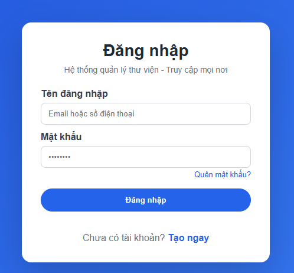
Phần bên trái hiển thị tất cả chức năng của hệ thống.
Phần bên phải hiển thị lịch làm việc của thủ thư hoặc quản trị viên trong tuần.
Phần bên trên hiển thị thanh tìm kiếm sách và biểu tượng thông báo và tài khoản của quản trị viên.

Hình 4.2 Giao diện Trang chủ - quản trị
Quản trị viên truy cập trang tìm kiếm sách, nhập tùy chọn (tìm theo tên sách, tên tác giả) và nhập nội dung để tìm kiếm.
Hệ thống gửi yêu cầu lên server, nhận về danh sách sách phù hợp.
Quản trị viên có thể nhấn vào hình ảnh hoặc tên sách để xem chi tiết.
Hiển thị chi tiết sách với các thông tin: tên sách, mã sách, mã giá sách, tác giả, năm xuất bản, mã kệ sách và số lượng còn lại của quyển sách đó trong thư viện.

Hình 4.3 Giao diện trang Tìm kiếm - quản trị
Tìm kiếm sách theo thể loại:
Quản trị viên truy cập trang tìm kiếm sách, chọn thể loại muốn tìm.
Hệ thống gửi yêu cầu lên server, nhận về danh sách sách tương ứng thể loại đã chọn.
Người dùng có thể nhấn vào hình ảnh hoặc tên sách để xem chi tiết.
Hiển thị chi tiết sách với các thông tin: tên sách, mã sách, mã giá sách, tác giả, năm xuất bản, mã kệ sách và số lượng còn lại của quyển sách đó trong thư viện.

Hình 4.4 Giao diện trang Thể loại sách - quản trị
Thêm mới sách: nhập thông tin sách (mã, tên, tác giả, năm xuất bản, thể loại, trạng thái,vị trí giá sách, số lượng), gửi lên server để lưu vào cơ sở dữ liệu.
Sửa thông tin sách: cập nhật các trường thông tin, trạng thái, số lượng.
Xóa sách: chọn sách cần xóa, xác nhận thao tác, hệ thống xóa khỏi cơ sở dữ liệu.
Quản lý trạng thái sách: cập nhật trạng thái (có sẵn, đang mượn, hết sách).

Hình 4.5 Giao diện Quản lí Sách - quản trị
Quản trị viên truy cập trang quản lý người dùng, xem danh sách tất cả người dùng (trừ mật khẩu).
Thực hiện cập nhật thông tin người dùng:email, địa chỉ. Gửi yêu cầu lên server, cập nhật vào cơ sở dữ liệu.
Xóa người dùng: chọn người dùng cần xóa, xác nhận thao tác, hệ thống xóa khỏi cơ sở dữ liệu.
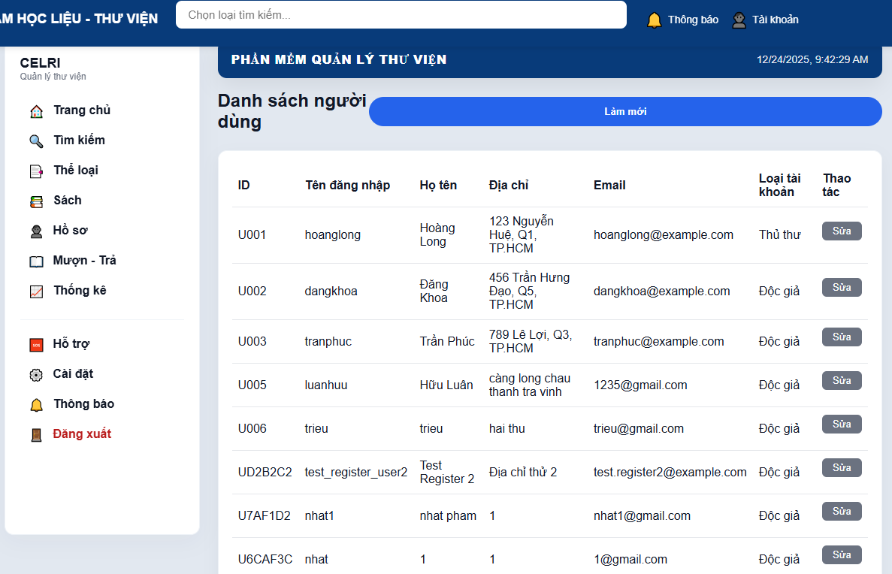
Hình 4.6 Giao diện trang Hồ sơ danh sách người dùng - quản trị
Quản trị viên xem số lượng tổng quan: tổng số người dùng, tổng số sách, tổng số lượt mượn, tổng số danh mục sách.
Dữ liệu được hiển thị dạng bảng hoặc biểu đồ trực quan.
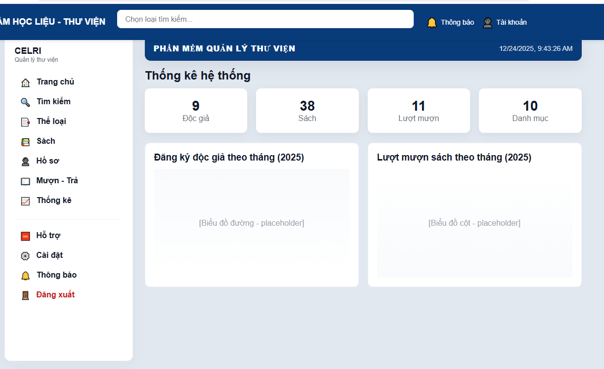
Hình 4.7 Giao diện trang Thống kê - quản trị
Quản trị viên có thể xem và cập nhật thông tin cá nhân trong trang Cài đặt: họ tên, tên đăng nhập, email, địa chỉ.
Có thể chọn đổi mật khẩu, nhập mật khẩu cũ và nhập mật khẩu mới. Khi cập nhật mật khẩu mới, hệ thống kiểm tra hợp lệ dữ liệu, gửi yêu cầu lên server để cập nhật vào cơ sở dữ liệu.
Nếu thành công sẽ thông báo, nếu thất bại thì hiển thị lỗi.
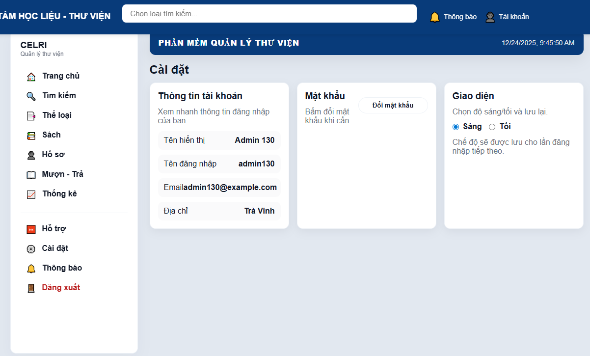
Hình 4.8 Giao diện trang Cài đặt - quản trị
Xem danh sách các yêu cầu hỗ trợ do người dùng gửi lên.
Xem chi tiết từng yêu cầu, phản hồi hoặc xử lý lại người dùng đó.
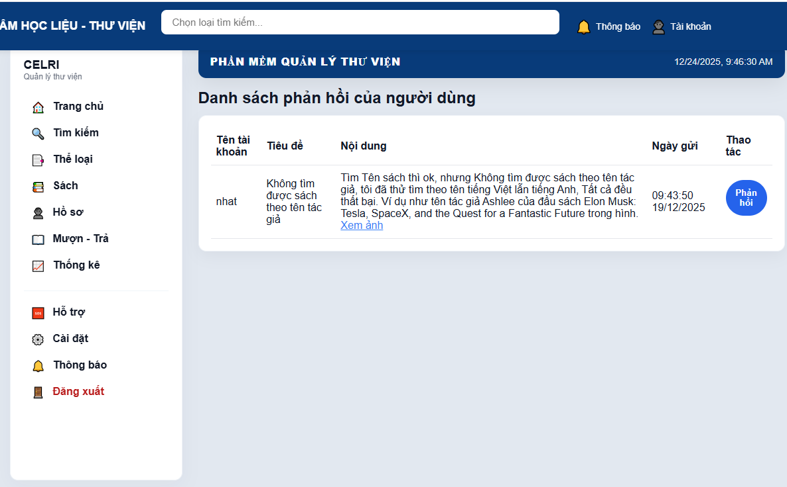
Hình 4.9 Giao diện trang Hỗ trợ - quản trị
Khi có yêu cầu hỗ trợ do người dùng gửi lên sẽ hiện thông báo đến quản trị viên bằng chấm đỏ trên biểu tượng cái chuông ở góc trên bên phải.
Bấm vào biểu tượng cái chuông hoặc chức năng “Thông báo” sẽ hiển thị danh sách các yêu cầu hỗ trợ do người dùng gửi đến. .

Hình 4.10 Giao diện trang Thông báo - quản trị
Người dùng truy cập trang đăng ký, nhập các thông tin: tên đăng nhập, mật khẩu, xác nhận mật khẩu, họ tên, email, địa chỉ.
Hệ thống kiểm tra hợp lệ dữ liệu: không để trống, mật khẩu nhập lại phải khớp, email đúng định dạng, tên đăng nhập/email không bị trùng với tài khoản đã có.
Khi hợp lệ, gửi yêu cầu đăng ký lên server. Server kiểm tra lại, lưu thông tin vào cơ sở dữ liệu, gán quyền mặc định là “người dùng”.
Nếu đăng ký thành công, thông báo cho người dùng và chuyển hướng sang trang đăng nhập. Nếu thất bại (trùng username/email, lỗi server), hiển thị thông báo lỗi cụ thể.
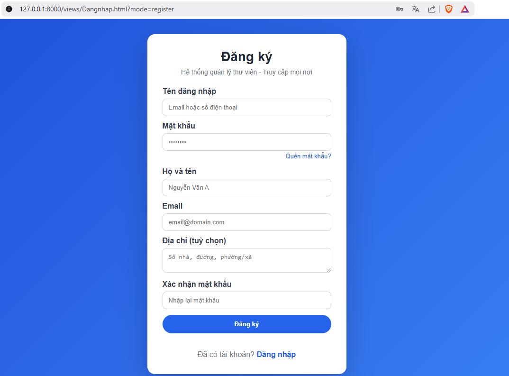
Người dùng nhập tên đăng nhập và mật khẩu trên trang đăng nhập.
Hệ thống gửi thông tin lên server để xác thực.
Nếu đúng, lưu thông tin người dùng vào cơ sở dữ liệu và chuyển đến giao diện người dùng. Nếu sai, hiển thị thông báo lỗi (tài khoản hoặc mật khẩu không đúng).

Hiển thị trang chủ của hệ thống sau khi đăng nhập thành công.
Phần bên trái hiển thị tất cả chức năng của hệ thống.
Phần bên trên hiển thị thanh tìm kiếm sách và biểu tượng thông báo và tài khoản của quản trị viên.
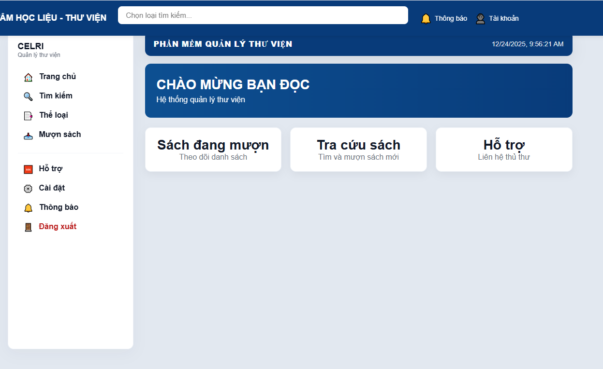
Hình 4.13 Giao diện Trang chủ - người dùng
Người dùng truy cập trang tìm kiếm sách, nhập tùy chọn (tìm theo tên sách, tên tác giả) và nhập nội dung để tìm kiếm.
Hệ thống gửi yêu cầu lên server, nhận về danh sách sách phù hợp.
Người dùng có thể nhấn vào hình ảnh hoặc tên sách để xem chi tiết.
Hiển thị chi tiết sách với các thông tin: tên sách, mã sách, mã giá sách, tác giả, năm xuất bản, mã kệ sách và số lượng còn lại của quyển sách đó trong thư viện.
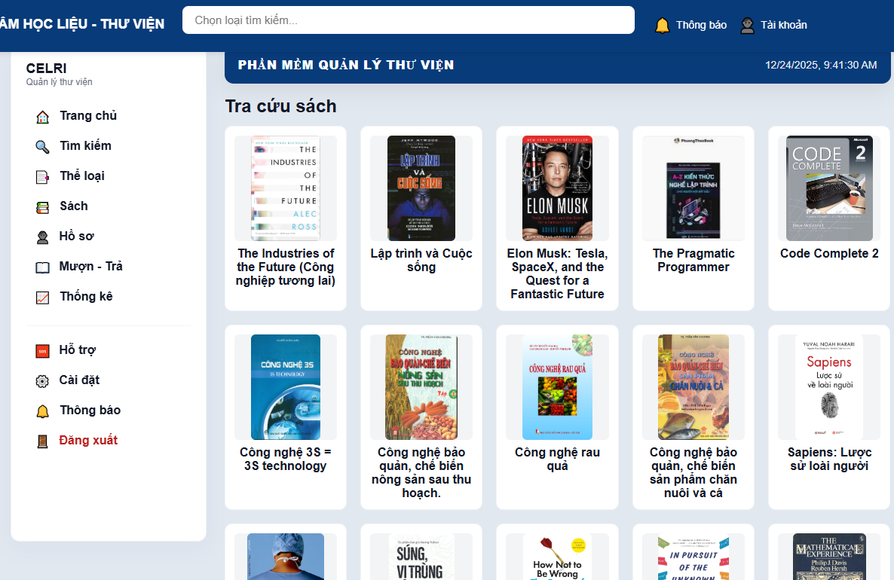
Hình 4.14 Giao diện trang Tìm kiếm - người dùng
Người dùng truy cập trang tìm kiếm sách, chọn thể loại muốn tìm.
Hệ thống gửi yêu cầu lên server, nhận về danh sách sách tương ứng thể loại đã chọn.
Người dùng có thể nhấn vào hình ảnh hoặc tên sách để xem chi tiết.
Hiển thị chi tiết sách với các thông tin: tên sách, mã sách, mã giá sách, tác giả, năm xuất bản, mã kệ sách và số lượng còn lại của quyển sách đó trong thư viện.

Hình 4.15 Giao diện trang Thể loại sách - người dùng
Người dùng truy cập trang Tìm kiếm, chọn sách muốn mượn và mượn sách. Hệ thống sẽ kiểm tra xem số lượng sách còn không, nếu còn thì tiến hành thực hiện trừ số lượng sách hiện tại và thông báo mượn sách thành công.
Khi mượn thành công, có thể chuyển qua giao diện Mượn sách để theo dõi thông tin các sách đã mượn, bao gồm: mã sách, tên sách, tác giả, ngày mượn, dự kiến ngày trả, trạng thái và thao tác.
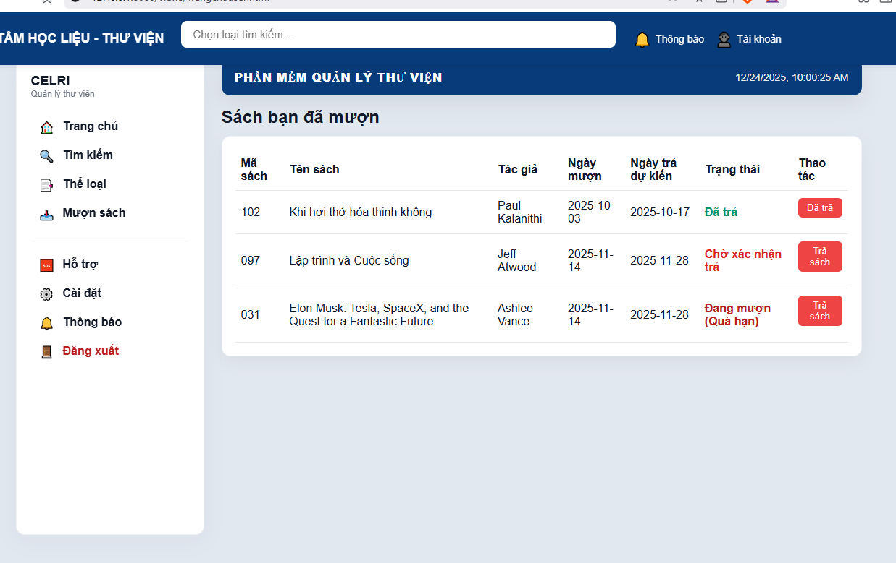
Hình 4.16 Giao diện Mượn - Trả sách - người dùng
Người dùng truy cập trang hỗ trợ, chọn Gửi yêu cầu hỗ trợ để được chuyển đến giao diện chi tiết yêu cầu hỗ trợ về các lỗi hoặc những bất cập người dùng gặp phải.
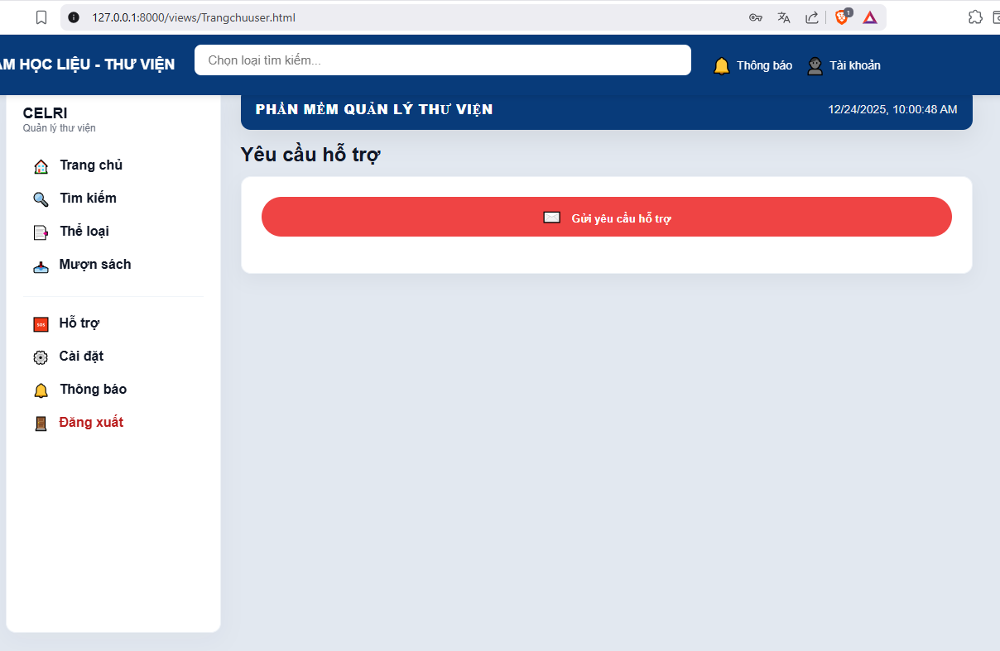
Hình 4.17 Giao diện trang Hỗ trợ - người dùng
Người dùng truy cập trang hỗ trợ, nhập tiêu đề, nội dung yêu cầu hỗ trợ, và đính kèm hình ảnh nếu có (ví dụ: lỗi đăng nhập, lỗi tìm kiếm, thắc mắc về sách, yêu cầu mượn sách). Hệ thống gửi yêu cầu lên server, lưu lại yêu cầu và phản hồi cho người dùng biết đã gửi thành công hay thất bại, nếu thành công sẽ gửi thông báo đến tài khoản của quản trị viên yêu cầu khắc phục.
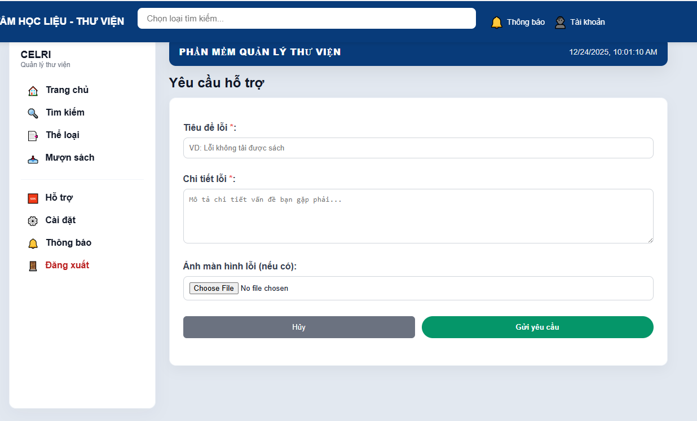
Hình 4.18 Giao diện trang Chi tiết Hỗ trợ - người dùng
Người dùng có thể xem và cập nhật thông tin cá nhân trong trang Cài đặt: họ tên, tên đăng nhập, email, địa chỉ.
Có thể chọn đổi mật khẩu, nhập mật khẩu cũ và nhập mật khẩu mới. Khi cập nhật mật khẩu mới, hệ thống kiểm tra hợp lệ dữ liệu, gửi yêu cầu lên server để cập nhật vào cơ sở dữ liệu. Nếu thành công, thông báo cho người dùng.Nếu thất bại, hiển thị lỗi.
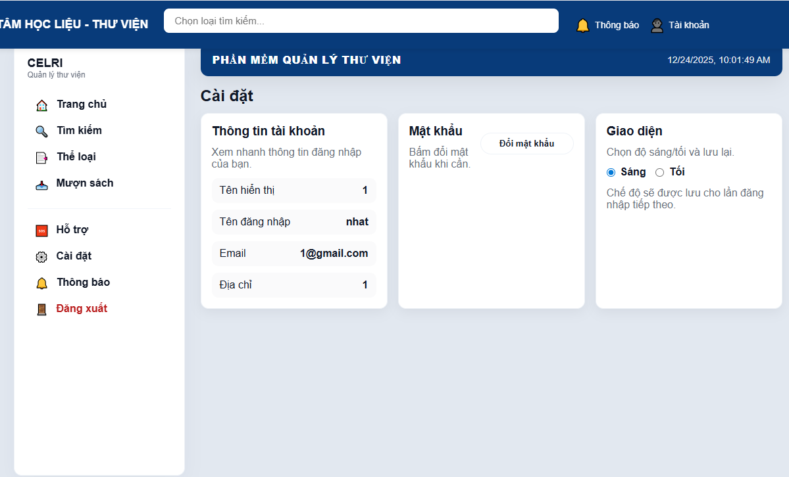
Hình 4.19 Giao diện trang Cài đặt - người dùng
Khi có phản hồi từ quản trị viên hoặc thủ thư gửi đến sẽ hiện thông báo đến người dùng bằng chấm đỏ trên biểu tượng cái chuông ở góc trên bên phải.
Bấm vào biểu tượng cái chuông hoặc chức năng “Thông báo” sẽ hiển thị danh sách các yêu cầu hỗ trợ đã phản hồi do quản trị viên hoặc thủ thư gửi đến. .
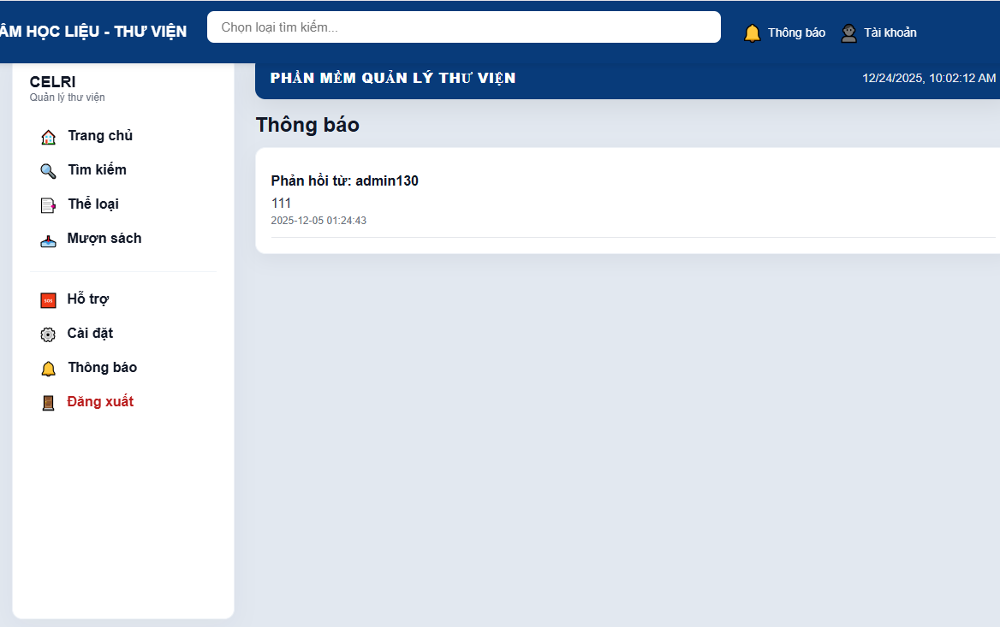
Hình 4.20 Giao diện trang Thông báo - người dùng
Thủ thư nhập tên đăng nhập, mật khẩu trên trang đăng nhập.
Hệ thống xác thực thông tin, kiểm tra quyền (loại user = 3).
Nếu đúng, chuyển đến giao diện quản trị, hiển thị các chức năng quản lý.

Hình 4.21 Giao diện Đăng nhập - thủ thư
Phần bên trái hiển thị tất cả chức năng của hệ thống.
Phần bên phải hiển thị lịch làm việc của các thủ thư trong tuần.
Phần bên trên hiển thị thanh tìm kiếm sách và biểu tượng thông báo và tài khoản của thủ thư.
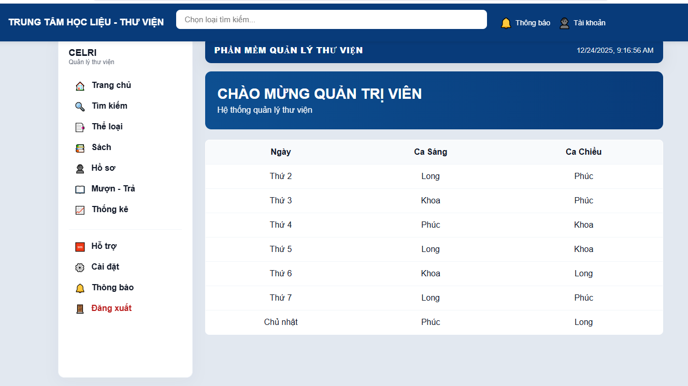
Hình 4.22 Giao diện Trang chủ - thủ thư
Thủ thư truy cập trang tìm kiếm sách, nhập tùy chọn (tìm theo tên sách, tên tác giả) và nhập nội dung để tìm kiếm.
Hệ thống gửi yêu cầu lên server, nhận về danh sách sách phù hợp.
Thủ thư có thể nhấn vào hình ảnh hoặc tên sách để xem chi tiết.
Hiển thị chi tiết sách với các thông tin: tên sách, mã sách, mã giá sách, tác giả, năm xuất bản, mã kệ sách và số lượng còn lại của quyển sách đó trong thư viện.

Hình 4.23 Giao diện trang Tìm kiếm - thủ thư
Tìm kiếm sách theo thể loại:
Thủ thư truy cập trang tìm kiếm sách, chọn thể loại muốn tìm.
Hệ thống gửi yêu cầu lên server, nhận về danh sách sách tương ứng thể loại đã chọn.
Người dùng có thể nhấn vào hình ảnh hoặc tên sách để xem chi tiết.
Hiển thị chi tiết sách với các thông tin: tên sách, mã sách, mã giá sách, tác giả, năm xuất bản, mã kệ sách và số lượng còn lại của quyển sách đó trong thư viện.
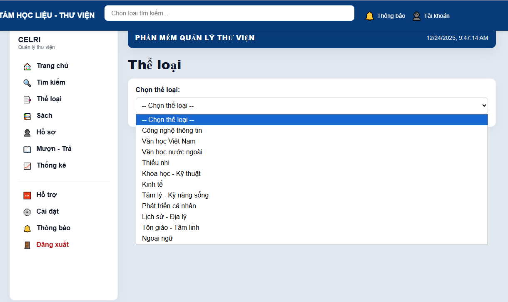
Hình 4.24 Giao diện trang Thể loại sách - thủ thư
Thủ thư truy cập trang quản lý người dùng, xem danh sách tất cả người dùng (trừ mật khẩu).
Thực hiện cập nhật thông tin người dùng: địa chỉ. Gửi yêu cầu lên server, cập nhật vào cơ sở dữ liệu.

Hình 4.25 Giao diện trang Hồ sơ danh sách người dùng - thủ thư
Thêm mới sách: nhập thông tin sách (mã, tên, tác giả, năm xuất bản, thể loại, trạng thái,vị trí giá sách, số lượng), gửi lên server để lưu vào cơ sở dữ liệu.
Sửa thông tin sách: cập nhật các trường thông tin, trạng thái, số lượng.
Xóa sách: chọn sách cần xóa, xác nhận thao tác, hệ thống xóa khỏi cơ sở dữ liệu.
Quản lý trạng thái sách: cập nhật trạng thái (có sẵn, đang mượn, hết sách).
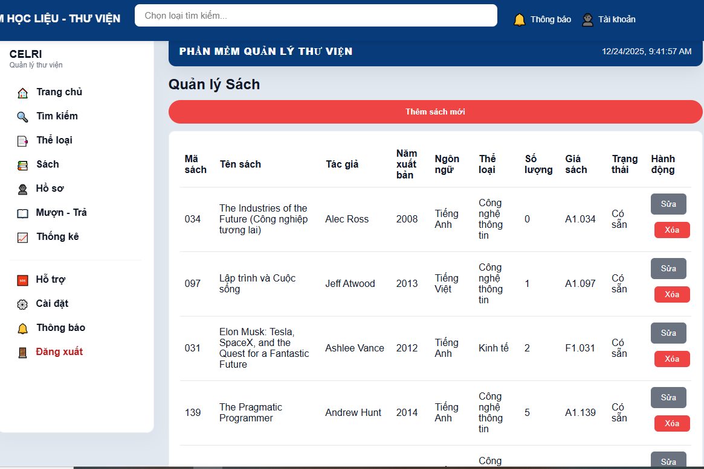
Hình 4.26 Giao diện Quản lí Sách - thủ thư
Thủ thư xem số lượng tổng quan: tổng số người dùng, tổng số sách, tổng số lượt mượn, tổng số danh mục sách. Dữ liệu được hiển thị dạng bảng và biểu đồ trực quan.

Hình 4.27 Giao diện trang Thống kê - thủ thư
Người dùng có thể xem và cập nhật thông tin cá nhân trong trang Cài đặt: họ tên, tên đăng nhập, email, địa chỉ.
Có thể chọn đổi mật khẩu, nhập mật khẩu cũ và nhập mật khẩu mới. Khi cập nhật mật khẩu mới, hệ thống kiểm tra hợp lệ dữ liệu, gửi yêu cầu lên server để cập nhật vào cơ sở dữ liệu.
Nếu thành công, thông báo cho người dùng. Nếu thất bại, hiển thị lỗi.
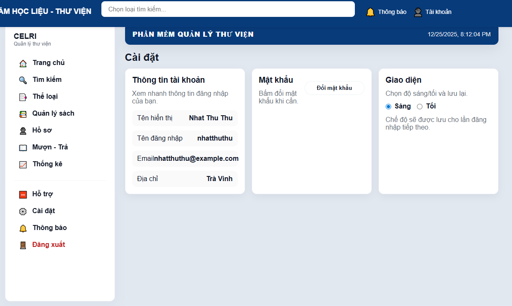
Hình 4.28 Giao diện trang Cài đặt - thủ thư
Xem danh sách các yêu cầu hỗ trợ do người dùng gửi lên.
Xem chi tiết từng yêu cầu, phản hồi người dùng đó hoặc gửi đến quản trị viên khi nằm ngoài khả năng, trách nhiệm của thủ thư.

Hình 4.29 Giao diện trang Hỗ trợ - thủ thư
Khi có yêu cầu hỗ trợ do người dùng gửi lên sẽ hiện thông báo đến quản trị viên bằng chấm đỏ trên biểu tượng cái chuông ở góc trên bên phải.
Bấm vào biểu tượng cái chuông hoặc chức năng “Thông báo” sẽ hiển thị danh sách các yêu cầu hỗ trợ do người dùng gửi đến. .

Hình 4.30 Giao diện trang Thông báo - thủ thư
Hệ thống đã hoàn thiện các mục tiêu đề ra với các kết quả cụ thể sau:
Về chức năng: Hệ thống vận hành ổn định các nghiệp vụ cốt lõi bao gồm: đăng ký/đăng nhập tài khoản, quản lý danh mục sách (thêm, xóa, sửa), tra cứu sách trực tuyến, và quản lý quy trình mượn - trả sách cho cả quản trị viên, thủ thư và độc giả.
Về kỹ thuật: Xây dựng thành công hệ thống theo kiến trúc Client-Server, tách biệt rõ ràng giữa Frontend (HTML/CSS/JS) và Backend (PHP). Các API RESTful được thiết kế chuẩn xác, cho phép phản hồi dữ liệu dưới dạng JSON một cách nhanh chóng.
Về lưu trữ: Cơ sở dữ liệu MongoDB được thiết kế tối ưu, lưu trữ hiệu quả thông tin người dùng, đầu sách và lịch sử giao dịch mượn trả.
Về triển khai: Đóng gói thành công ứng dụng vào các container Docker, giúp cài đặt và triển khai hệ thống trở nên đơn giản, nhất quán trên nhiều môi trường khác nhau.
Công cụ | Mô tả |
HTML, CSS, Javascript | Xây dựng giao diện nhẹ, tối ưu hóa tốc độ tải trang trên trình duyệt. Sử dụng Fetch API để gửi yêu cầu bất đồng bộ, giúp trang web phản hồi tức thì mà không cần tải lại toàn bộ trang |
PHP, MongoDB | PHP xử lý logic phía máy chủ với tốc độ thực thi cao. MongoDB cung cấp khả năng truy vấn dữ liệu phi cấu trúc nhanh chóng, đặc biệt hiệu quả khi xử lý lượng lớn dữ liệu sách và lịch sử mượn trả |
Docker Compose | Tạo môi trường triển khai đồng nhất giữa các thành viên trong nhóm. Cho phép chạy backend, database trong môi trường cô lập để kiểm thử tích hợp và triển khai thực tế. |
GitHub | Dự án được quản lý bằng Git, giúp theo dõi lịch sử phát triển, phối hợp làm việc nhóm. Có thể mở rộng kiểm thử tự động bằng cách tích hợp GitHub Actions để chạy test khi có cập nhật mã nguồn. |
Hệ thống chú trọng vào việc nâng cao trải nghiệm người dùng thông qua các yếu tố:
Giao diện trực quan: Giao diện quản trị và người dùng được thiết kế tối giản, khoa học, giúp người dùng dễ dàng làm quen và thao tác ngay từ lần đầu sử dụng.
Tính tương tác cao: Các thông báo trạng thái (thành công, lỗi) được hiển thị rõ ràng khi thực hiện các thao tác mượn trả hay cập nhật thông tin.
Tốc độ phản hồi: Nhờ sự kết hợp giữa kiến trúc API và cơ sở dữ liệu NoSQL, các thao tác tìm kiếm sách và lọc dữ liệu diễn ra với độ trễ thấp, tạo cảm giác mượt mà cho độc giả.
Tính linh hoạt: Hệ thống cho phép độc giả chủ động tra cứu và đặt mượn sách mọi lúc mọi nơi thông qua trình duyệt web, giảm thiểu đáng kể thời gian chờ đợi tại quầy thủ thư truyền thống.
Hệ thống được thiết kế và phát triển dựa trên kiến trúc phần mềm hiện đại theo mô hình Client-Server, với Frontend và Backend được tách biệt rõ ràng thông qua hệ thống API. Việc tách biệt này giúp hệ thống đạt được tính module hóa cao, dễ dàng bảo trì và nâng cấp các thành phần độc lập. Ở phía Frontend, dự án sử dụng các ngôn ngữ tiêu chuẩn là HTML, CSS và JavaScript để xây dựng giao diện người dùng, đảm bảo tốc độ phản hồi nhanh, trực quan và dễ tiếp cận đối với mọi đối tượng độc giả. Phía Backend được phát triển trên nền tảng PHP, cung cấp các API xử lý logic nghiệp vụ và kết nối dữ liệu ổn định. Dữ liệu được quản lý thông qua MongoDB, giúp linh hoạt trong việc lưu trữ các cấu trúc dữ liệu khác nhau của đầu sách và người dùng. Toàn bộ hệ thống đã được đóng gói bằng Docker và quản lý thông qua Docker Compose, giúp tăng tính nhất quán giữa các môi trường phát triển và đảm bảo hoạt động ổn định khi triển khai thực tế. Việc sử dụng Git/GitHub cũng giúp nhóm quản lý mã nguồn khoa học và theo dõi sát sao lịch sử phát triển dự án.
Mặc dù hệ thống đã hoàn thiện về mặt chức năng và đáp ứng được các yêu cầu thực tế của một thư viện trực tuyến, nhưng vẫn còn tồn tại một số hạn chế:
Giao diện di động: hệ thống hiện tại chủ yếu tối ưu cho trình duyệt máy tính, giao diện chưa thực sự linh hoạt (Responsive) hoàn toàn trên các thiết bị di động có màn hình nhỏ.
Bảo mật nâng cao: quá trình bảo mật và xác thực vẫn ở mức cơ bản, chưa áp dụng các cơ chế mã hóa dữ liệu đầu vào phức tạp hoặc quản lý phiên làm việc nâng cao, điều này có thể dẫn đến rủi ro trong môi trường vận hành quy mô lớn.
Chức năng thống kê: khả năng phân tích dữ liệu thống kê còn ở mức mô tả cơ bản, chưa hỗ trợ các bộ lọc nâng cao như lọc theo khoảng thời gian tùy chỉnh hoặc phân tích sâu hành vi mượn sách của từng nhóm độc giả.
Tính năng bổ trợ: hệ thống vẫn chưa triển khai các tính năng tự động hóa quan trọng như gửi thông báo nhắc trả sách qua email, xác thực tài khoản qua mã OTP, hay tích hợp các cổng thanh toán điện tử cho các khoản phí phạt nếu có.
Để nâng cao chất lượng và phạm vi ứng dụng trong tương lai, hệ thống được định hướng mở rộng theo các khía cạnh sau:
Tối ưu giao diện (UI/UX): triển khai giao diện phản hồi (Responsive UI) sử dụng các framework UI hiện đại để hệ thống hoạt động hoàn hảo trên desktop, tablet và mobile.
Nâng cấp bảo mật: tích hợp các chức năng xác thực nâng cao như xác minh qua Email, áp dụng chuẩn JWT (JSON Web Token) cho API và hỗ trợ đăng nhập thông qua các tài khoản mạng xã hội (Google, Facebook).
Mở rộng nghiệp vụ: bổ sung hệ thống gửi thông báo tự động khi sách sắp hết hạn.
[1] Cao Lê Viết Tiến, “PHP là gì? Khái niệm, cú pháp PHP cơ bản, đầy đủ cho newbie 2025”, vietnix.vn,2025. [Trực tuyến]. Available: https://vietnix.vn/php-la-gi/?utm_term=&gad_campaignid=23234186547 [Truy cập: 25/11/2025].
[2] Hưng Nguyễn, “MongoDB là gì? Cẩm nang toàn tập về MongoDB cho người mới bắt đầu”, vietnix.vn,2025. [Trực tuyến]. Available: https://vietnix.vn/mongodb-la-gi/?utm_term=&gad_campaignid=23234186547 [Truy cập: 25/11/2025].
[3] Ngô Thị Ngọc Linh , “Những điểm khác biệt giữa SQL và NoSQL”, viblo.asia,2018. [Trực tuyến]. Available: https://viblo.asia/p/nhung-diem-khac-biet-giua-sql-va-nosql-gGJ59b4rKX2 [Truy cập: 26/11/2025].
Bước 1: cài đặt các gói cần thiết
Bước 2: khởi động MongoDB
Bước 3: chạy backend
Bước 4: chạy frontend
Bước 5: kiểm thử hệ thống
Liên kết Github Repository:
https://github.com/nhat11111111/cn-da22ttb-phamminhnhat-QLTV-php.git